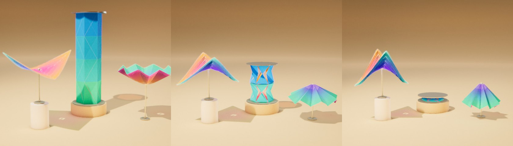

01Ce que montre la scène
Chaque feuille est un disque de papier percé en son centre, par où passe sa tige. Elle a deux couleurs, une par face. Sur la feuille sont marqués des plis. Un pli montagne se ferme vers le haut, comme le faîte d'un toit ; un pli vallée se ferme vers le bas. Entre les plis, les zones de papier qui doivent rester planes s'appellent des pans. L'ensemble des plis d'une feuille est son patron.
Il y a deux familles de patrons. Dans la première, les plis sont des anneaux concentriques, montagne et vallée alternés, coupés par des diagonales qui vont du centre aux coins. C'est un exercice classique du cours de Josef Albers au Bauhaus : la feuille, en se pliant, se tord en forme de selle de cheval. La graine choisit le nombre de côtés (carré, hexagone, octogone), une vrille qui tourne chaque anneau un peu plus que le précédent (spirale, rosace) ou des côtés creusés (étoile). Dans la seconde famille, les plis partent du centre comme des rayons, et la feuille se ferme comme une ombrelle.
Une scène sur trois environ remplace la grande feuille par une tour de quatre prismes en papier empilés, qui s'écrasent à plat étage par étage puis se redressent.
Le film est une boucle de 14 secondes. Pendant ce temps, chaque feuille passe deux fois d'une position à l'autre. La page suit l'ordre de construction :
- le solveur, le programme qui calcule la forme : des charnières qui plient (section 02), des barres qui empêchent le papier de s'étirer (03) et le maillage de la feuille (04) ;
- le mouvement : la selle qui apparaît d'elle-même (05), le geste sec du papier (06) et la boucle qui se referme sans saut (07) ;
- le rendu : le film relu par la carte graphique (08), la couleur qu'un pan renvoie sur l'autre (09), les ombres colorées (10), et la place des feuilles dans la scène (11) ;
- la tour : un prisme aux faces rigides (12), ses deux états stables (13) et la tour qui claque étage par étage (14).
02Des charnières qui cherchent leur angle
src/sim/fold.js · dihedral(), createSolver()Pour calculer une feuille, on la découpe en petits triangles, un maillage. Les plis du patron suivent des arêtes de ce maillage. Le modèle vient du simulateur d'origami d'Amanda Ghassaei (2018).
Chaque arête intérieure est une charnière entre ses deux triangles. On mesure l'angle dont un triangle est relevé par rapport à l'autre, l'angle dièdre θ, qui vaut zéro quand la feuille est à plat. Chaque charnière a une cible θ0 : zéro dans un pan, puisque le papier y reste plan, et ±θ0 sur un pli, avec un signe qui dit montagne ou vallée. La règle la plus simple est celle d'un ressort : plus l'angle est loin de sa cible, plus la charnière pousse fort pour l'y ramener.
Une charnière agit sur quatre sommets : les deux bouts de l'arête et les deux pointes des triangles. La force sur chacun est proportionnelle à l'écart d'angle, et dirigée selon le gradient de θ, c'est-à-dire la direction dans laquelle déplacer ce sommet change le plus l'angle :
fi est la force sur le sommet i, k la raideur de la charnière (0,7 pour un pli), ℓ la longueur de l'arête, x2 et x3 les deux pointes, nA et nB les normales des deux triangles (perpendiculaires à leur plan, non ramenées à la longueur 1). Les forces des pointes sont portées par ces normales : pousser une pointe hors du plan de son triangle est la seule façon de changer l'angle. Celles des deux bouts de l'arête s'en déduisent, de façon que les quatre forces s'annulent : une charnière ne déplace ni ne fait tourner la feuille dans son ensemble.
dihedral() du projet et la formule ci-dessus ; glissez sur la figure pour la tourner.- Laissez la cible à 0° et faites varier l'angle : les pointes sont poussées vers le plan, les bouts de l'arête dans l'autre sens, et le bandeau donne une somme des quatre forces nulle à toutes les positions.
- Donnez à la cible la même valeur que l'angle : les flèches disparaissent, la charnière est à l'équilibre.
Pour aller plus loin
Une erreur de signe dans ce gradient donne un pliage qui semble marcher, puis diverge. Un test compare donc les douze composantes à une différence finie (un sommet déplacé d'un millionième), avec une tolérance de 10⁻⁴, et vérifie que l'angle est exactement nul à plat.
03Des barres qui ne s'allongent pas
src/sim/fold.js · createSolver().step()Les charnières plient la feuille. Il faut aussi l'empêcher de s'étirer. Chaque arête du maillage est donc une barre, qui doit garder sa longueur.
Première idée : des ressorts très raides
Dans le simulateur d'origine, les barres sont des ressorts très raides. Le calcul avance par petits pas de temps Δt : à chaque pas, la force change la vitesse, puis la vitesse change la position. Cette méthode, dite explicite, diverge si le pas dépasse une fraction de la période d'oscillation du ressort le plus raide. Plus les barres sont raides, plus le pas doit être court. Il faut alors des dizaines de milliers de pas pour plier une feuille, et presque tout ce travail sert à empêcher le papier de s'étirer.
Deuxième idée : corriger les longueurs après chaque pas
Fold sépare les deux rôles. Les charnières restent des forces. Les barres deviennent des contraintes de longueur : après chaque pas, on parcourt les barres une à une, et l'on rapproche ou écarte leurs deux bouts, chacun de la moitié de l'erreur, pour leur rendre leur longueur d'origine. Corriger une barre dérègle un peu ses voisines ; on repasse donc quatre fois sur l'ensemble. Cette méthode, où chaque correction profite aussitôt des précédentes, s'appelle une relaxation de Gauss-Seidel. La vitesse est ensuite recalculée à partir de la position corrigée : une barre qu'on vient de raccourcir ne garde pas la vitesse qui l'avait allongée.
En résumé, un pas du solveur s'écrit :
x et v sont les positions et les vitesses des sommets, f la somme des forces des charnières, c = 0,05 un amortissement (5 % de la vitesse perdus à chaque pas, qui mène la feuille vers son équilibre) et proj la correction des barres. Le pas de temps ne dépend plus que de la raideur des charnières et de la plus petite arête ℓmin :
k = 0,7 est la raideur d'un pli, kF = 2,1 celle d'un pan (on verra en section 05 pourquoi elle est trois fois plus forte), et les longueurs sont mesurées en rayons de feuille. Retenons que la plus petite arête du maillage fixe le pas de toute la feuille. La démo de la section 05 permet de réduire le nombre de passes de correction.
Pour aller plus loin
Le premier essai corrigeait toutes les barres en même temps, à partir des mêmes positions (une relaxation de Jacobi), ce qui se prête au calcul sur carte graphique. Une passe laissait trop d'étirement, là où quatre passes de Gauss-Seidel suffisent. Le solveur est donc resté sur le processeur, dans un fil de calcul parallèle (un worker), et la carte graphique ne fait que relire le résultat (section 08).
Deux précautions tiennent la feuille en place. L'anneau intérieur est recentré à chaque pas sur la tige. Et la rotation d'ensemble autour de la tige est retirée : rien ne retient une feuille de tourner sur elle-même, et la moindre asymétrie numérique la ferait dériver au fil des milliers de pas.
04Un maillage cousu en fermeture éclair
src/sim/fold.js · pleatedU()Il reste à découper la feuille en triangles. Le maillage le plus naturel pour un disque est en rayons : des anneaux concentriques qui portent tous le même nombre de points. Près du centre, ces points se serrent, et les triangles deviennent minuscules. Or on vient de voir que la plus petite arête fixe le pas de temps : toute la feuille paierait pour quelques mailles du centre.
Dans Fold, le nombre de mailles d'un anneau est proportionnel à son rayon, si bien que toutes les mailles ont à peu près la même taille. Deux anneaux voisins n'ont alors pas le même nombre de points, et il faut les relier par des triangles. L'algorithme avance en alternance sur l'un et sur l'autre, toujours du côté dont le prochain point est le plus en retard, comme les dents d'une fermeture éclair. La couture se fait côté par côté, pour que les diagonales du patron restent des arêtes du maillage.
// entre un anneau de a mailles et le suivant, de b mailles
while (p < a || q < b) {
if (q < b && (p >= a || (q + 1) / b <= (p + 1) / a)) { triangle(p, q + 1, q); q++; }
else { triangle(p, p + 1, q); p++; }
}pleatedU(), appelé tel quel avec sept anneaux de papier. En rouge les plis montagne, en bleu les vallées ; les diagonales (traits fins) sont des plis plus faibles, à 60 % de l'angle des anneaux. Le bouton « Maillage en rayons » dessine à la place le maillage naïf, reconstruit pour la figure. Les arêtes de moins de 0,02 rayon sont surlignées en vert, et leur nombre est affiché en bas à gauche.- Passez en maillage en rayons : les arêtes courtes s'accumulent au centre. La plus petite arête tombe de 0,047 à 0,008 rayon, et le pas de temps de 0,027 à 0,011.
- Montez la finesse à 16 dans les deux maillages : en rayons, la plus petite arête descend encore (0,005 rayon), alors qu'en fermeture éclair elle reste à 0,047 rayon, parce que la finesse ne change que le nombre de mailles le long des anneaux.
- Essayez « Ombrelle » : les plis deviennent des rayons, montagne et vallée alternés.
Pour aller plus loin
La première version du patron était en rayons. Ses mailles minuscules près du centre imposaient un pas très court, et le papier s'étirait de 10 %. Le maillage cousu, avec des barres devenues des contraintes (section 03), a réglé les deux défauts.
05La selle n'est pas dessinée
src/sim/fold.js · pleatedU(), createSolver()On sait plier une feuille sans l'étirer. Regardons maintenant ce qui arrive quand les plis concentriques se referment. Vu en coupe le long d'un rayon, chaque anneau de papier devient un zigzag. Un pli fermé d'un angle θ ne couvre plus que cos(θ/2) de sa largeur : la feuille raccourcit en rayon. Mais chaque anneau fait le tour de la feuille, et sa longueur ne change pas, puisque le papier ne s'étire pas. Il est donc trop long pour le cercle qu'on lui laisse.
Un fil trop long pour son cercle n'a qu'une issue : sortir du plan et onduler. C'est un flambage, le phénomène qui fait gondoler une règle qu'on comprime par ses deux bouts. L'ondulation qui coûte le moins d'énergie a deux bosses et deux creux : la selle de cheval.
- Montez l'angle des plis à 2 rad : le rayon permis tombe à 0,54, l'anneau a 85 % de longueur en trop, et ses deux bosses montent à 0,63 rayon. La petite feuille carrée de la démo suivante, avec ses diagonales et ses pans raides, ne monte qu'à 0,47 rayon.
- Passez à 3 bosses : pour la même longueur en trop, elles ne montent qu'à 0,42 rayon. C'est l'ondulation d'un hexagone, dont les six coins imposent trois bosses.
Le coup de pouce
Le solveur ne sait rien de ce raisonnement. Il applique ses deux règles, et la selle apparaît. Il lui manque seulement de quoi choisir : une feuille parfaitement symétrique ne sait pas quels coins lever. Une force très faible le lui dit, le coup de pouce, qui pousse un coin sur deux vers le haut et les autres vers le bas, d'autant plus fort qu'on s'éloigne du centre :
fy est la force verticale sur un sommet, r sa distance à la tige et φ son angle autour d'elle. ε = 0,02 règle la force (0,05 pour la spirale et la rosace), et q est le nombre de bosses. Le paramètre g vaut 0 ou 1 : passer de l'un à l'autre décale le motif d'un cran w et désigne les autres coins. La selle a donc deux états, images l'un de l'autre par une rotation, et le film enregistre le passage de l'un à l'autre.
createSolver() importé tel quel (douze pas par image) ; le coup de pouce est recopié de bake(). Faites glisser pour tourner. « Basculer » inverse le coup de pouce avec la pichenette du film (sept fois plus fort pendant une demi-seconde, amortissement réduit). Le bandeau indique dans quel état se trouve vraiment la selle. La couleur des faces est celle de l'accord Bonbon ; l'éclairage de la figure est une simple loi de Lambert.- Passez à une seule passe de projection : l'étirement moyen passe de 0,23 % à 0,64 %, et le pire de 1,6 % à 4,1 %.
- Ramenez la raideur des pans à 1 × pliure : les pans se courbent entre les plis, et leur angle moyen passe de 4,6° à 6,6°.
- Le carré bascule même plié à fond. Choisissez maintenant l'hexagone, laissez-le se plier à 1,9 rad, puis cliquez sur « Basculer » : le bandeau indique que le coup de pouce pousse vers B, mais la selle reste dans l'état A. Rouvrez les plis à 0,6 rad : la selle passe d'elle-même dans l'état B.
Des pans raides
Dans un premier temps, pans et plis avaient la même raideur. La feuille se pliait, mais ses pans se courbaient entre les plis et tout le mouvement ondulait : on y voyait du tissu, pas du papier. Le papier se plie là où sa fibre a été cassée et reste plan ailleurs. Les charnières des pans sont maintenant trois fois plus raides que celles des plis (kF = 3k).
Une ombrelle fonctionne de la même façon avec des plis en rayons. Ses deux états sont « fermée vers le haut » et « fermée vers le bas », et le coup de pouce est une poussée verticale, fy = 3 ε r² cos(πg).
06Le geste du papier
src/sim/fold.js · bake()Le film d'une feuille est une bascule : le passage d'un état à l'autre, en sept secondes et trois cents images. Si tous les plis s'ouvraient ensemble pendant que le coup de pouce glisse d'un état à l'autre, la feuille se déformerait continûment, comme une étoffe qu'on retourne. On a vu dans la démo précédente qu'une selle pliée à fond peut aussi refuser de basculer. Le calendrier du film règle ces deux problèmes :
- la feuille reste immobile pendant le premier dixième du film, et pendant le dernier septième ;
- ses plis se rouvrent l'un après l'autre, du bord vers le centre, jusqu'à 26 à 36 % de leur angle (la graine choisit) ; la selle rouverte bascule plus facilement ;
- la selle claque : le coup de pouce s'inverse en un centième et demi du film (un dixième de seconde), il est renforcé sept fois le temps d'une pichenette, et l'amortissement tombe de 5 % à 1,2 % par pas, si bien que la feuille dépasse sa position, vibre un instant et se calme ;
- les plis se referment l'un après l'autre, du centre vers le bord.
L'angle visé par un pli de rang r (0 au centre, 1 au bord) à l'instant u de la bascule (de 0 à 1) est
A est l'angle des plis fermés (1,8 à 2,05 radians), o la part de l'angle gardée pendant l'ouverture et S une rampe en S (smoothstep) qui part et arrive à pente nulle. Le premier S rouvre le pli, le second le referme ; le décalage en r fait passer le mouvement de pli en pli.
bake() du projet dans un worker, puis relu en boucle. En bas, le calendrier d'une bascule, recopié de bake() : l'angle des plis du bord et du centre, l'instant où le coup de pouce s'inverse, la fenêtre d'amortissement réduit. La seconde moitié de la boucle est le même film, relu tourné d'un quart de tour (section suivante). Cliquez dans la frise pour déplacer la tête de lecture.- Passez au ralenti × 4 et regardez le passage de la ligne verte « inversion » : la feuille claque en quelques images, dépasse sa position et vibre, pendant la bande teintée où l'amortissement est réduit.
- Suivez les deux courbes : les plis du bord se rouvrent les premiers, ceux du centre se referment les premiers.
Une ombrelle n'a pas de rangs : tous ses plis s'ouvrent ensemble, et sa bascule est un retournement, le cône passant de pointe en bas à pointe en haut.
Pour aller plus loin
Trois patrons existaient et ont été retirés de la recette. Les plis en cercles (selle ronde, trèfle à trois bosses) n'ont pas de coins pour les caler : une fois les pans raidis, leur bascule ne retombait pas à coup sûr sur son point de départ. Les plis larges et étroits alternés ne basculaient pas franchement à la finesse de la grande feuille. Un flocon à six branches se pliait à peine. Le solveur sait toujours les plier.
07Une boucle refermée par symétrie
src/sim/fold.js · bake() · src/scene/stage.js · update()Une simulation ne revient jamais exactement à son point de départ, et une boucle qui saute d'un millimètre se voit. Fold n'essaie pas de revenir au départ. Il utilise le fait que l'état d'arrivée d'une bascule est l'état de départ tourné d'un cran w (un quart de tour pour un carré ou un octogone, un sixième pour un hexagone), et que le patron est le même après ce tour. Si σ(i) désigne le sommet qui occupe, un cran plus loin, la place du sommet i, le film doit vérifier
où xi(0) est la position du sommet i au début de la bascule, xσ(i)(1) celle de σ(i) à la fin, et Rw la rotation d'un cran autour de la tige.
On ne calcule donc qu'une bascule. La seconde est le même film, relu tourné de w : le programme de la carte graphique tourne les positions et les normales, et tourne la lampe en sens inverse dans ses calculs d'éclairage. Après deux bascules, la feuille a tourné de deux crans, ce qui la ramène sur elle-même puisque la selle a cette symétrie.
- À 0°, les deux courbes sont décalées, avec un écart de 0,83 rayon. Tournez la première image d'un quart de tour (90°) : les courbes se superposent, et l'écart tombe à 0,000.
Trois opérations rendent ce raccord exact :
- Le même chemin avant le film. L'équilibre d'une feuille plissée dépend du chemin par lequel on y arrive : il y a plusieurs façons de ranger le même papier. Avant d'enregistrer, la feuille est entrouverte, puis refermée par le calendrier exact de la fin d'une bascule. Elle part ainsi de l'état où elle arrivera.
- Un fondu sur le dernier quart. L'écart qui reste (0,0026 rayon pour la petite feuille de la démo, 0,043 pour la grande spirale de la scène d'ouverture) est réparti en douceur sur les 75 dernières images.
- Une moyenne sur les symétries. Chaque image est moyennée avec ses q copies tournées de deux crans. La feuille acquiert exactement la symétrie de la selle, et la boucle de deux bascules se referme à la précision des nombres à virgule.
Pour aller plus loin
Dans une première version, la feuille était pliée d'un seul bloc avant le film, puis fermée pli par pli à la fin. Ce n'était pas le même chemin, donc pas le même équilibre, et le fondu devait rattraper un dixième du rayon : on voyait la feuille glisser en fin de bascule.
L'arrivée d'une ombrelle est son départ tourné d'un cran et retourné haut en bas. Le film relu à l'envers montre donc l'autre face du papier, et le sens de ses triangles est inversé. Le shader échange les deux couleurs et retourne la normale une bascule sur deux ; sans cela, l'ombrelle changeait de couleur à chaque retournement.
Pour un carré, une rosace et une ombrelle : l'écart avant fondu est inférieur à 6 % du rayon (la selle a bien basculé), l'étirement moyen du papier inférieur à 2 %, la forme a un vrai volume (plus de 0,3 rayon), la dernière image est la première tournée d'un cran à 10⁻⁵ près, et une image prise au milieu du film a la symétrie de la selle avec la même précision.
08Le film, relu par la carte graphique
src/sim/fold.js · renderMesh() · src/scene/stage.js · addSheet()Simuler à chaque image coûterait des centaines de pas de calcul pour un mouvement qui ne change jamais. Le film est donc calculé une fois, pendant l'écran de chargement, puis rangé dans deux textures, des images dont chaque pixel contient des nombres à virgule : une colonne par sommet, une ligne par image du film, 301 lignes. L'une contient les positions, l'autre les normales. Le vertex shader, le programme de la carte graphique qui place chaque sommet, lit les deux lignes qui encadrent l'instant courant et les interpole. Le film est échantillonné à 43 images par seconde et peut être lu à n'importe quelle cadence, à l'endroit, à l'envers ou image par image pour l'export.
Des normales vives sur les plis
Si deux pans partagent leurs sommets le long d'un pli, la normale y est la moyenne des deux, et l'éclairage arrondit le pli : le papier ressemble à du caoutchouc. Les sommets sont donc dédoublés le long des plis. Un pan est l'ensemble des triangles reliés par des arêtes qui ne sont pas des plis ; un sommet posé sur un pli existe en autant d'exemplaires que de pans qui s'y rejoignent. Chaque exemplaire reçoit la normale moyenne de son seul pan, recalculée pour chacune des 301 images.
renderMesh() les produit : chaque pixel est un vecteur, ses trois coordonnées lues comme du rouge, du vert et du bleu. Une ligne est une image du film ; le curseur choisit celle que la feuille de gauche relit. On y lit le calendrier de la bascule : les bandes immobiles en haut et en bas, le claquement au milieu.- Cliquez sur « Sommets partagés » : la normale de chaque exemplaire est remplacée par la moyenne de tous les exemplaires du même sommet, ce que donnerait un maillage sans dédoublement. Les arêtes vives des plis s'adoucissent.
- Le bandeau compte 667 colonnes pour 416 sommets : 251 exemplaires de plus le long des plis.
Pour aller plus loin
Le papier porte une couleur par face, dégradée du centre vers le bord. Trois détails le font passer pour du papier plutôt que pour du plastique : un grain fin qui accroche la lumière rasante et s'efface dès qu'un pixel couvre plusieurs grains (de loin, il ne ferait que scintiller), un filet clair le long des plis, là où la fibre cassée blanchit, et la tranche blanche du bord coupé. Le grain est lu dans un secteur de la feuille replié en éventail, pour rester le même quand la selle a tourné d'un cran.
09La couleur d'un pan sur l'autre
src/scene/stage.js · bleed() · src/sim/fold.js · renderMesh()Dans le creux d'un pli, un pan éclairé renvoie sa couleur sur le pan d'en face. Ce renvoi donne au papier plié ses tons profonds, et il manque à une image de synthèse où chaque surface ne voit que la lampe. Le calculer pour toute la scène est coûteux. Ici, la géométrie de chaque feuille est connue d'avance, et le calcul peut se faire sommet par sommet.
Chaque sommet connaît ses huit plus proches voisins des pans adjacents, cherchés une fois pour toutes sur la feuille à plat, et l'aire de papier que chacun représente. La part de lumière qu'un petit élément de surface j, d'aire Aj, envoie vers le sommet i s'appelle son facteur de forme :
r est la distance entre les deux, θi et θj les angles entre leurs normales et la droite qui les joint. Deux éléments face à face et proches échangent beaucoup de lumière, deux éléments de biais ou éloignés presque rien. Le terme Aj au dénominateur empêche la formule de diverger quand les deux pans se touchent au fond du pli. Ej est l'éclairement du voisin, calculé d'après sa normale et la direction de la lampe ; cj est la couleur de la face qu'il tourne vers le sommet, et ci la lumière colorée que le sommet reçoit. Le calcul est fait dans le vertex shader, pour le recto et le verso séparément, à partir des positions de l'instant courant.
renderMesh() du projet ; la boucle sur les huit voisins est recopiée de bleed(), avec ses constantes (lampe 3,4, ambiance 0,4, gain du renvoi 1,8). La figure n'a ni ombres portées ni rebond en espace écran, et colore chaque triangle de la moyenne de ses trois sommets.- Cliquez sur « Renvoi seul » : seule reste la lumière que chaque pan reçoit des autres, logée dans les creux des plis.
- Avancez dans le film : le renvoi vaut 12 % de l'éclairage direct à l'image 0, quand les plis sont fermés, et 2 % à l'image 150, quand ils sont rouverts.
10Des ombres colorées et un rebond de lumière
src/scene/stage.js · addSheet() · shared/render/post.jsLa scène est dépouillée : des feuilles, des tiges, un fond de couleur. Rien n'y cache un éclairage approximatif. Trois termes de lumière s'ajoutent au renvoi de couleur.
L'ombre d'une feuille n'est pas noire. Le papier laisse passer environ un cinquième de la lumière, qui prend sa couleur au passage. Le matériau déclare donc la couleur de son ombre, et la carte d'ombre de la lampe (l'image vue depuis la lampe, qui sert à décider ce qui est éclairé) la transporte : sous une feuille rose, le sol est rose sombre.
- Cliquez sur « Papier opaque » : l'ombre devient neutre, comme celle d'un matériau ordinaire, et le sol rose ne garde que sa part d'ambiance.
- Abaissez la lampe : l'ombre s'allonge et s'éloigne de la tige.
La lumière qui traverse. Vue à contre-jour, une face reçoit la lumière tombée sur l'autre. Ce terme s'ajoute à la couleur de la face regardée.
Un rebond en espace écran. À plus grande échelle, le sol clair éclaire le dessous des feuilles et les socles, et le papier teinte le sol. Ce rebond est calculé sur l'image elle-même (SSGI, screen-space global illumination) : pour chaque pixel, on explore l'image dans quelques directions et l'on récolte la lumière des surfaces qu'on y rencontre. Il est actif en qualité Haute et Cinéma, pas sur mobile.
Pour aller plus loin
Deux erreurs donnaient la même tache. La lumière transmise était d'abord teintée par le produit des deux encres : du jaune à travers du bleu donne du vert, en plaques sur le dos des plis. Elle garde maintenant la teinte de la face regardée. Et l'ombre colorée d'un pli tombait sur le pli voisin : le papier reçoit désormais une ombre neutre, un peu plus dense, et seuls le sol et les socles voient l'ombre teintée.
Le nœud de rebond de three.js produit deux résultats, une occlusion et la lumière indirecte. Sa sortie par défaut est l'occlusion : ajoutée à l'image comme si c'était de la lumière, elle voilait tout de gris. Il faut demander la lumière indirecte par son accesseur propre, et la multiplier par la couleur des surfaces.
11Des feuilles qui ne se touchent jamais
src/recipe.js · generate()Le solveur ne gère pas les contacts : deux feuilles voisines se traverseraient sans le savoir, et les premières scènes en montraient. Détecter ces collisions pendant le pliage coûterait plus cher que le pliage lui-même. La recette les rend impossibles. Une feuille ne s'étire pas, donc aucun de ses points ne s'éloigne de la tige de plus que son rayon à plat. Elle tient tout entière, quoi qu'elle fasse, dans un cylindre vertical de ce rayon autour de sa tige. La graine place les tiges de façon que ces cylindres soient séparés par un jeu d'au moins 0,08 (le rayon de la grande feuille est proche de 1).
generate() du projet. Chaque disque est le cylindre d'une feuille, à sa couleur de recto ; le cercle pointillé ajoute la moitié du jeu. La caméra est en bas. La grande feuille est au centre, les autres devant elle, à gauche et à droite.- Cliquez plusieurs fois sur « Autre graine » : le plus petit jeu entre deux cylindres varie (0,096 pour la graine 40aatl, de 0,093 à 0,160 pour les quatre suivantes), sans jamais descendre sous 0,08.
La même recette pose chaque feuille assez haut sur sa tige pour que son point le plus bas reste au-dessus de son socle : il descend au plus à 0,62 rayon sous le centre pour une selle, 0,95 pour une ombrelle fermée.
Une tour suit la même règle. Ses étages tournent et s'affaissent, mais aucun point ne sort du cylindre de son plateau de laiton, de rayon 1,3 l, ni de celui de son socle. Quand la graine tire une tour, elle prend la place du centre et les feuilles se rangent autour : la grande devient la moyenne, la moyenne la petite. La tour est tirée à part des autres choix, si bien qu'une graine sans tour garde exactement la scène qu'elle avait avant que la tour n'existe.
Pour aller plus loin
Un test le vérifie sur trois cents graines, avec la séparation des cylindres, l'alternance d'une face chaude et d'une face froide, et le fait que deux feuilles ne portent jamais le même patron. Une limite demeure : une feuille peut encore se traverser elle-même dans ses plis les plus serrés, et le papier n'a pas d'épaisseur.
12Une tour de prismes aux faces rigides
src/sim/fpori.js · unitParams(), corners(), fitPoint()Dans une scène sur trois environ, une tour de papier remplace la grande feuille au centre. Ses quatre étages tournent ensemble en s'affaissant, puis s'écrasent à plat l'un après l'autre, d'un coup sec. Plus tard, ils se redressent un à un.

La tour reprend un pliage publié par Liu et ses collègues en 2024 (FP-ori, dans Scientific Reports). Un étage est un prisme droit à six côtés. Chaque face latérale est un rectangle de largeur l et de hauteur H0. Une de ses diagonales, du coin bas gauche au coin haut droit, est pliée en vallée ; l'autre est coupée. Le centre de la face devient donc deux points, X et Y, qui s'écartent quand le dessus tourne : la coupe s'ouvre en losange. Chaque face se partage ainsi en quatre triangles.
La règle la plus simple suppose que le papier est rigide entre les plis : aucun triangle ne se déforme. Le dessus tourne d'un angle θ autour de l'axe et descend. Comme l'arête verticale d'un coin du bas au coin du dessus garde sa longueur H0, la hauteur ne dépend que de θ. Le point X d'une face reste à la même distance d (la demi-diagonale) de ses trois coins : il est à l'intersection de trois sphères. La pose entière se calcule donc sans simulation, en forme close.
fitPoint() du projet, à la distance d de leurs trois coins. En rouge, les triangles qui en traversent un autre, détectés par intersections(). Le dehors est jaune orangé, le dedans bleu. Glissez sur la figure pour la tourner.La démo montre où cette règle échoue. L'angle α mesure la pente de la diagonale : H0 = l tan α. À α = 45°, l'étage se plie à plat pour θ = 60° et aucun triangle n'en traverse un autre. Au-dessus de 45°, quelque chose cède à θ = 60°. Dans chaque coin, le triangle gauche d'une face et le triangle droit de la face voisine partagent l'arête verticale. Ils se referment l'un sur l'autre comme les pages d'un livre. La règle rigide fait ensuite passer chaque aile du coin à travers l'autre, à partir de 61°, ce que le papier ne peut pas faire. La section suivante corrige ce défaut.
n est le nombre de côtés (6), l la longueur d'un côté (de 8,5 à 24 cm selon la place de la tour), R le rayon du cercle qui passe par les coins (égal à l pour un hexagone), H0 la hauteur de l'étage déployé, h sa hauteur quand le dessus a tourné de θ, d la demi-diagonale d'une face. h s'annule pour cos θ = 1 − H0²/(2R²) : 60° à α = 45°, 87° à α = 54°, 120° à α = 60°.
// src/sim/fpori.js (simplifié) : les coins, puis X et Y à la distance d de trois coins
const { B, T } = corners(P, h, th); // dessous fixe, dessus tourné de θ à la hauteur h
let X = fitPoint([B[0], B[1], T[0]], [1, 1, 1], P.d, X0);
let Y = fitPoint([T[0], T[n - 1], B[0]], [1, 1, 1], P.d, Y0);
// les autres faces : la même chose tournée de 2π/n autour de l'axe- Laissez α à 45° et poussez θ jusqu'au bout : l'étage arrive à plat à 60° sans qu'aucun triangle ne devienne rouge.
- Passez α à 60° et poussez θ au-delà de 60° : dans chaque coin, les deux ailes se traversent, soit douze paires de triangles. Vers 96°, d'autres paires s'y ajoutent.
- Comparez α = 54° et α = 60° : dans les deux cas, les faces se traversent dès 61°. La règle rigide ne distingue pas ces deux pliages ; le papier, lui, les distingue (section suivante).
13Deux états stables
src/sim/fpori.js · limb(), energyPath()Avec de vrais modèles en papier, l'article observe deux comportements. À α = 60°, l'étage écrasé à plat y reste tout seul. À α = 54°, il se redresse dès qu'on le lâche. Un objet qui a deux positions de repos s'appelle bistable.
La correction de la section précédente part du contact. Quand les deux triangles d'un coin se rencontrent, ils restent pressés l'un contre l'autre : leurs points X et Y se confondent en un seul point M, tiré par quatre coins au lieu de trois. Un point tiré par quatre coins ne peut plus être à la bonne distance de chacun, et le papier doit s'étirer un peu. On reprend le modèle de l'article : les plateaux du dessus et du dessous sont rigides, chaque pli est une barre élastique qui a une longueur de repos. L'énergie de l'étage est la somme, sur toutes les barres, du carré de leur allongement. Pour chaque rotation θ, on cherche la hauteur et la position de M qui rendent cette énergie la plus petite possible : c'est le chemin de moindre énergie, le chemin que suit l'étage quand on l'écrase lentement.
energyPath() du projet pour l'angle α choisi (trait épais) et, en fin, pour 45°, 54° et 60°. À gauche, l'étage dans l'état correspondant, posé par poseAt() : un triangle rougit avec l'allongement de ses barres (rouge plein à 3 %). Les longueurs sont en unités du côté l, et les barres ont une raideur de 1.La courbe de 60° montre les deux états. Jusqu'à 60°, l'énergie est nulle : l'étage tourne sans effort, il suit la règle rigide. Au contact, elle monte : le papier se tend. Elle passe par un maximum vers 88°, puis redescend et revient à zéro à plat, à 120°. L'étage à plat est un second état de repos, séparé du premier par une barrière. Pour passer la barrière, il faut pousser ; une fois au-delà, l'étage tombe de lui-même à plat. C'est le claquement. À 54°, la courbe ne redescend pas : à plat, le papier reste tendu, et l'étage se redresse. Le modèle retrouve les deux observations de l'article sans aucun réglage.
U est l'énergie de l'étage, L la longueur d'une barre dans l'état (h, θ), L0 sa longueur dans le papier à plat, F la force verticale qu'il faut exercer sur le dessus pour tenir l'étage dans cet état. À 60°, F atteint 0,032 en compression avant la barrière, puis −0,016 au-delà : l'étage tire alors vers le bas. Le papier s'étire au plus de 2,5 %, vers 85°.
// src/sim/fpori.js · limb() (simplifié) : un coin de l'étage dans l'état (h, θ)
X = fitPoint([b0, b1, t0], [1, 1, 1], d, X); // à la distance d de ses trois coins
Y = fitPoint([t0, tm, b0], [1, 1, 1], d, Y);
phi3 = angleAbout(b0, ax, ref, Y) - angleAbout(b0, ax, ref, X); // ouverture du livre
if (phi3 < 0) {
// pressés l'un contre l'autre : un seul point, tiré par quatre coins
// (B0 M et T0 M appartiennent aux deux triangles : leur poids est double)
const M = fitPoint([b0, b1, t0, tm], [2, 1, 2, 1], d, mid(X, Y));
X = M; Y = M;
}- Avec α = 60°, faites glisser θ de 60° à 120° : les triangles des coins rougissent jusque vers 88°, puis pâlissent. À 120°, la courbe et la couleur reviennent à zéro.
- Passez α à 54° : la courbe épaisse monte jusqu'à plat et y reste (0,011). L'étage n'a qu'un état de repos.
- Faites varier α entre 54° et 60°. À partir de 56° environ, la courbe épaisse passe par un maximum puis redescend : l'étage à plat est retenu, même si le papier y reste un peu tendu. En dessous, elle ne fait que monter. L'article annonce une telle frontière entre 45° et 60° ; ce modèle la place vers 56°. Seul α = 60° donne un état à plat sans aucune tension.
Pour aller plus loin
Les tests du projet vérifient ces résultats : contact à θ = 2π/n, barrière, puis énergie nulle à plat pour n = 6 et α = 60° ; énergie piégée à plat à 54° ; aucune énergie à 45° ; bistable aussi pour un octogone à 67,5°, la moitié de son angle. Ils vérifient encore que la pose garde exactement la symétrie d'ordre six et qu'aucun triangle n'en traverse un autre le long du chemin.
Au rendu, deux triangles pressés l'un contre l'autre auraient exactement la même position, et la carte graphique ne saurait pas lequel montrer : ils scintilleraient. Ils sont écartés de l'épaisseur d'une feuille (0,35 mm pour un côté de 9 cm), sauf presque à plat, où cet écart les ferait croiser les couches voisines. Le papier du modèle s'étire au lieu de gondoler comme le vrai : c'est une limite.
14Une tour qui claque étage par étage
src/sim/tower.js · simulate(), pressY()Quatre étages empilés se partagent la compression. Pourtant, dans la scène, ils ne s'écrasent pas ensemble : ils tournent d'abord tous un peu, puis ils claquent l'un après l'autre, à une demi-seconde d'intervalle.
La règle : chaque étage avance le long de son chemin de moindre énergie, et lui seul en décide la forme. Les plateaux entre deux étages ont une masse et peuvent tourner ; un étage sur deux est l'image de l'autre dans un miroir, si bien que deux plateaux voisins tournent en sens contraires. Le dessus est mené par une course qui descend, attend, puis remonte. Dans la scène, rien ne montre ce qui la mène : comme les feuilles, la tour se plie seule. Quand la course impose la hauteur totale, les étages en série portent la même force. Le premier qui passe sa barrière claque ; les autres se détendent un peu, puisque la hauteur qu'il vient de perdre leur est rendue.
simulate() du projet dans un worker. À gauche, la tour vue de côté : un rectangle par étage, à sa hauteur, et sur chaque plateau un repère qui tourne avec lui. Le trait pointillé est la course. À droite, la rotation θ de chaque étage pendant les 14 secondes de la boucle ; le trait gris marque le contact, à 60°. Les boutons changent les raideurs des quatre étages (de bas en haut) et relancent le calcul.Dans quel ordre les étages claquent-ils ? Si les quatre étaient identiques, le calcul n'aurait aucune raison de choisir. Deux choses les distinguent. La première est le poids : l'étage du bas porte les trois plateaux du dessus, il claque le premier, et à la remontée c'est celui du haut qui se redresse d'abord. La seconde est l'imperfection : la graine donne à chaque étage une raideur un peu différente (de 0,9 à 1,08), comme deux modèles en papier ne sont jamais tout à fait pareils. Celui dont la barrière est la plus basse claque le premier.
Le premier calcul utilisait θ comme coordonnée de chaque étage. Près de l'état à plat, la hauteur varie infiniment vite avec θ (la courbe h(θ) y est verticale), et la masse apparente des plateaux devient infinie. L'intégrateur injectait de l'énergie : les étages dépassaient la butée et tournaient jusqu'à 200°. La correction paramètre chaque étage par la longueur σ parcourue sur son chemin (en mêlant hauteur et rotation), dont les dérivées restent bornées, et écrit les équations du mouvement complètes.
σ regroupe la position de chaque étage sur son chemin, M est la matrice de masse (la masse m de chaque plateau, 12 g, et son inertie de rotation), U la somme des énergies des étages, c l'amortissement des plis, Q les forces de la course et du poids. Le dernier terme vient de ce que la hauteur d'un plateau est une somme de fonctions d'une seule variable : hi'' est la courbure du chemin de l'étage i. Le pas de temps est fixe (1/24 000 s). Deux boucles sont calculées et seule la seconde est gardée : elle commence là où la première finit, et le raccord est exact (moins d'un dixième de degré).
// src/sim/tower.js · simulate() (simplifié) : un pas
for (let j = 1; j <= N; j++) { // plateau j, porté par les étages i < j
cy += h2[j - 1] * v[j - 1] ** 2; // accélération due à la courbure des chemins
for (let a = 0; a < j; a++) {
for (let b = 0; b < j; b++) M[a * N + b] += m * h1[a] * h1[b] + I * t1[a] * t1[b];
Q[a] -= m * h1[a] * cy + I * t1[a] * cp;
}
}
// + énergie des barres, plis, poids, course ; puis M σ̈ = Q, et un pas d'Euler symplectique- Avec « Raideurs égales », regardez l'ordre : à la descente, du bas vers le haut (1, 2, 3, 4) ; à la remontée, du haut vers le bas. Seul le poids décide.
- Avec « Raideurs de la graine » (1, 1,08, 0,9, 0,95), l'étage 3, le plus souple, claque le premier, puis 1, 4 et 2. À la remontée, le poids reprend la main.
- Sur la courbe, repérez le moment où un étage claque : les autres reculent un instant sous 60°.
Pour aller plus loin
Le film d'une tour (quatre angles et quatre hauteurs par image, 60 images par seconde) est calculé au chargement par un worker du projet, en même temps que les feuilles, en moins d'une seconde. À chaque image, la pose de chaque étage est reconstruite sur le processeur à partir de (h, θ), ainsi que la couleur que chaque pan renvoie sur ses voisins : la tour n'a que 126 triangles. La simulation est faite pour un côté de 9 cm ; la scène l'agrandit sans changer le temps.
Dans la scène, la tour reste à plat moins de deux secondes : elle est le sujet, et le centre ne doit pas rester vide. Sa place suit la règle des cylindres de la section 11 : son emprise est le rayon de son plateau de laiton (1,3 l) ou de son socle.
15Récapitulatif
Au chargement, pour chaque feuille, dans un worker :
- le patron est maillé en fermeture éclair (section 04) ;
- la feuille est entrouverte, puis refermée comme à la fin d'une bascule (section 07) ;
- le film d'une bascule est calculé : à chaque pas, les charnières poussent vers l'angle du calendrier, le coup de pouce choisit l'état, puis les barres sont corrigées en quatre passes (sections 02, 03, 05 et 06) ;
- l'écart de raccord est fondu sur le dernier quart, chaque image est moyennée sur les symétries de la selle (section 07), puis les sommets sont dédoublés le long des plis et le film est rangé en deux textures (section 08) ;
- pour une tour : le chemin de moindre énergie d'un étage est tabulé, puis deux boucles de la tour sous sa course sont simulées, et seule la seconde est gardée (sections 13 et 14).
À chaque image :
- la phase de la boucle donne, pour chaque feuille, la bascule en cours et l'instant dans le film ; la seconde bascule est la première tournée d'un cran (section 07) ;
- le vertex shader interpole les positions et les normales entre deux lignes des textures, et calcule le renvoi de couleur de huit voisins (sections 08 et 09) ;
- la pose de chaque étage de la tour est reconstruite sur le processeur à partir de sa hauteur et de sa rotation, avec la couleur renvoyée entre ses pans (sections 12 à 14) ;
- le rendu ajoute les ombres teintées, la lumière transmise et le rebond en espace écran (section 10).
16Budget
Tout le pliage se fait pendant l'écran de chargement, une feuille par worker, en parallèle. L'écran de chargement plie lui-même, en direct, une version grossière de la grande feuille de la graine avec le même solveur, et n'en dessine que les plis.
| Étape | Où | Coût |
|---|---|---|
| Grande feuille de la graine 40aatl : 1 924 sommets, 510 images simulées de 17 pas | worker | ≈ 9 s |
| Petite feuille de démo (416 sommets) | worker | ≈ 1,4 s |
| Film enregistré par feuille : 301 images, positions et normales | GPU | 2 textures flottantes |
| Film d'une tour : quatre étages, deux boucles simulées au pas de 1/24 000 s | worker | ≈ 0,7 s |
| Pose d'une tour, à chaque image : 126 triangles et leurs renvois de couleur | processeur | 126 |
| Scène d'ouverture (graine 2nwhb5) : une tour, un carré et une ombrelle ; la pièce la plus longue, le carré (832 sommets) | worker | ≈ 2,7 s |
| Renvoi de couleur : voisins lus par sommet, pour chaque face | GPU | 8 |
| Image 1 280 × 720, chaîne complète | GPU | ≈ 5,5 ms |
Les pièces d'une scène sont calculées en parallèle : le chargement dure autant que la plus longue, presque toujours la grande feuille. Une fois la scène affichée, la page calcule déjà la scène suivante dans les workers libres, et la touche N l'affiche en deux secondes environ. Le temps de la grande feuille a été mesuré dans Node sur un portable Apple (8,9 s), celui de la petite feuille dans cette page. Le temps d'image a été mesuré sur le même portable, dans une fenêtre masquée : c'est un ordre de grandeur.